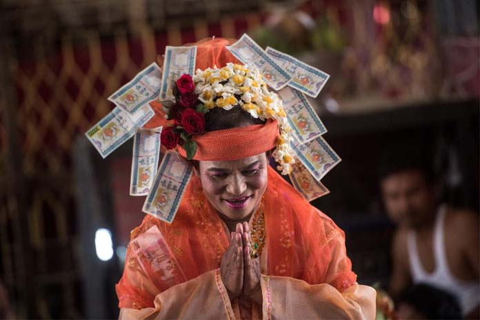
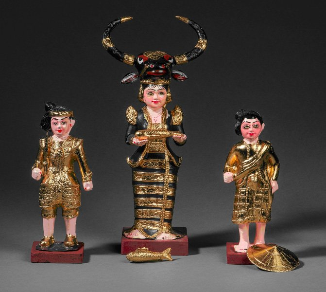

Natto(Nat-taw) : December
Written by Khin Myo Chit and Junior Win ( Flowers & Festivals )
9.Natto(Nat-taw)
Haze fallsin the eight regions,
the silver mist is fresh and moist.
As the breeze gently blows in the woods.
tulips and orchids
have their scents wafted
left and right.
At the top of the high mountain
Yugandhara
Candi the golden moon
and Orionis, sprinkling their rays,
march together.
Natto(Nat-taw)
Day and sunny days with a touch of coolness in the evenings begin with the month of Tazaungmone.By Nat-taw, cold season is in full swing. In lower Myanmar towns like Yangon the weather is just pleasnt,not too hot or cold, but in upper Myanmar towns and nothern hill areas it is really cold.
Agrarian people in the countryside have a spell of leisurely days now that the fields are golden with ripening grain.The air is filled with music and song as a succession of local pagoda festivals and ritual feasts on in the neighbourhood.
Ritual feasts in honour of (nats), traditional family gods, are celebrated during this month. The Myanmar experssion (nat) covers all kinds of celestials and spirits of different levels, starting with the residents of the skiey regions above, powergul gods, to lower level of spirits or ghosts wandering homeless and starving.
It is almost incomperhensible to foreigners that animism and Buddhism should exist side by side in Myanmar society and Myanmar personality.For an ordinary Myanmar Buddhist it is natural for him to believe in the existence of (nats) and to given offerings to them if he wishes.
When King Anawrahta of Bagan established Theravada Buddhism in the llth,century,images of (nats) are given niches in pagodas (Shwezigon, Bagan for instance). People were allowed to go on with their traditional offerings to their (nats).The non-severing of the animistic ties was helpful in introducing, the new faith , Theravada Buddhism so long as the Five percents are not infringed.Hence sacrificial offerings of live animals are against the Buddhist teachings.
One of the basic tenets of Buddhism is that all beings, humans and nats of all levels go round the cycle of lives meeting one another on amicable of hostile circumstances.The state of level of all beings is decided by one's own deeds, good or bad.
Nats are mentioned in many of the Buddha's discourses.The Buddha himself, before he was reborn as Prince Siddhatha, later to become the Buddha, was a celestial in the regions high above.When as Buddha, he preached sermons, (nats) form a great part of his congregation.(Nats) bacame his devout disciples.
Consequently, when a Buddhist makes offerings of (nats), it is done in the spirit of kinship and loving kindness, as one might do for a friend.
(Nats) are beings like humans going round the cycle of life; they exist on a different plane of existence, but sharing kinship and continuity of life.Many (nats) are given niches on pagoda precincts because they too are disciples of the Buddha. They are there to look after the welfare of the pilgrims, as many people believe.
It is in this month of Nat-Taw that ritural feasts in honour of (nats) are held.Even when the feast is held by an individual family, friends and neighbours join in to share the music, songs and dances.
When a ritual feast is held either by a family or a community , prefessional mediums are called in. These mediums have images of (nats). A marquee is built and all the images and accessories and offerings of flowers, candles and fruits are placed in there on an elevated dais.
A space is reserved for the orchestra, with the elaborate decorations of mythiscal figures like dragons and pyinsayupa, an animal with the body of a horse, winged like a bird, horned like an antler and scaled like a fish.
Dances are spirited as might be expected, as the mediums are possessed by the (nats) and the music is rollicking. It is a colourful affair and the audience can join in and people often do.
Ritual feasts are, of anything, clan gatherings with all the romance, mirth and fun.Many of the songs, dances and plays of the Myanmar theatre have their roots in the ritual feasts.
There are often practices that overstep the bounds of prepriety and not in keeping with the teachings of the Buddha.
Some of the ritual feasts run wild like drinking bouts.Such are frowned upon by good Buddhists.
But things go on and will go on so long as people have their need for feasts and rituals and above all, to let off steam once in a while.